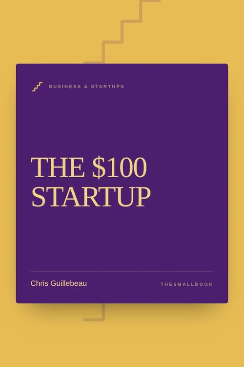

Library › Ask the Library › How do I start a business?
How do I start a business?
The short answer
You don't need funding, permission, or a perfect plan, you need a skill, a customer, and the nerve to start today. Solve one painful problem for one specific person.
The books behind the answer

The $100 Startup
Chris Guillebeau · 2012 · 8 min · 6 lessons
You don't need funding, permission or a perfect plan - you need a skill, a customer, and the nerve to start today.
- The $100 Start: Most successful businesses started with under ₹8,000. The 'I need funding' story is usually fear in disguise.

The Lean Startup
Eric Ries · 2011 · 8 min · 6 lessons
A startup's only job is learning what customers actually want - faster than the money runs out.
- Validated Learning: The Real Unit of Progress: Ship the smallest test, measure one metric, learn from real customers, before building anything big.

The Personal MBA
Josh Kaufman · 2010 · 8 min · 6 lessons
Business is one skill: creating and capturing value. Master the 10 core concepts and you out-think most MBAs.
- The Iron Law: Solve a real problem better than the alternatives. If the problem is imaginary, the business is too.

The Mom Test
Rob Fitzpatrick · 2013 · 8 min · 6 lessons
Never ask if your idea is good - even your mom will lie. Ask about their life, their past, their problems: facts, not compliments.
- The Mom Test: Three Rules That Fix Every Question: Never ask 'would you use this?', people lie to be nice. Ask what they did last time.
A failure that proves it
Why did Pets.com fail?
2000 · STARTUP · Loss: $300M in 268 days post-IPO
Pets.com raised $300 million to sell dog food online, before customers were ready. Timing is a feature.
Scale multiplies your unit economics - it never repairs them. Losing money per sale × more sales = bankruptcy, faster. Fix the unit BEFORE the Super Bowl ad.
Why did Juicero fail?
2017 · BUSINESS · Loss: $120M in funding
Juicero sold a $400 machine that squeezed bags customers could squeeze by hand. Never build what the market can do with its hands.
'Can we build it?' is the wrong first question. The Mom Test costs nothing: if the solution is more complicated than the problem, it's not a product - it's a demo.
Also asked in Hindi and Hinglish
People also ask this as: business kaise start karein, apna kaam kaise shuru karein. The answer on this page stays in simple English, and the live book can be read in Hindi or Hinglish.
Questions people ask next
Can I read this in Hindi?
Yes. This answer is written in simple English. Open any linked book and choose Hindi or Hinglish to read the full lessons in your language, with audio where available.